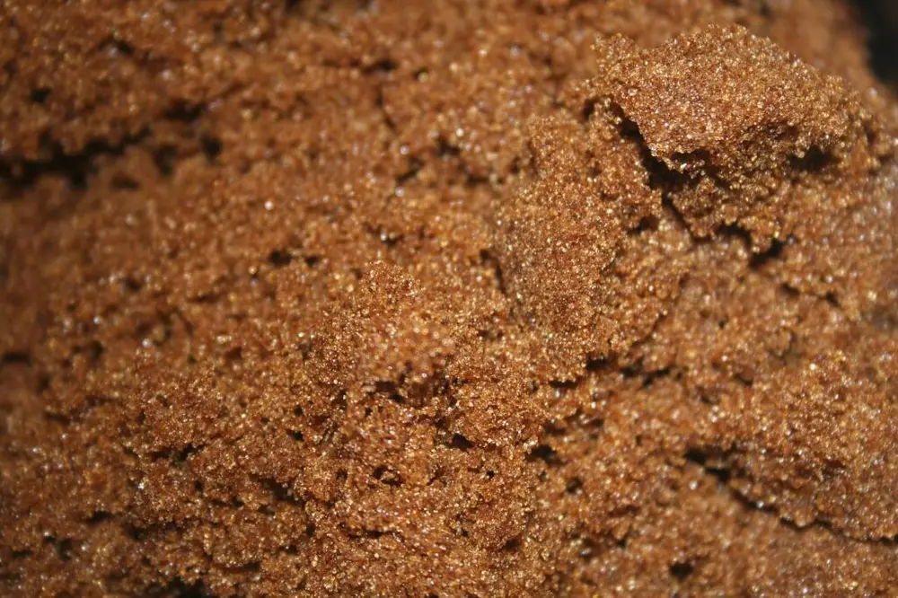
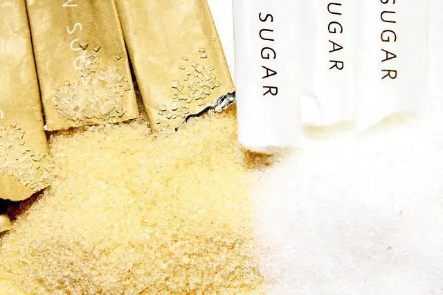

文章 / 飲品配方與資訊
Know your Brown Sugar
這篇是英文原文，尚未完成繁體中文翻譯。中文選單與相關商品連結不會切回英文介面。
查看英文原文（尚未翻譯）
Brown sugar goes hand in hand with bubble tea – tapioca pearls are soaked in it, milk tea is flavoured with it, and not to mention the hyped-up “Tiger Dot” milk tea reigning supreme on Instagram.
However, what exactly is it? What makes it different from regular sugar? How is it made? Why do people think it’s healthier?
Read on and find out!

What is brown sugar?
Brown sugar is a type of sugar that contains more molasses than white sugar. The molasses give this sugar both its colour and its distinctive cane sugar taste and smell.
There are two different types – “commercial” and “natural”. The former is white sugar with molasses added to give it colour and flavour, while the latter naturally contains molasses.
How do you tell them apart? If the granules are finer and more regular in shape, it’s commercial. If it’s larger and more irregular in shape, it’s natural.
How it’s made
Brown sugar in the West often refers to the commercial type. However, the type commonly found in Taiwan and some other Asian countries is natural, made using more traditional methods:
- Raw materials
Large amounts of sugar canes are cleaned and cut down in size
- Juicing and filtering
The sugar canes are juiced using a machine, then the juice is filtered to remove impurities like sand and dirt
- Cooking
The juice is cooked using wood-fired stoves so that the sugar crystallizes
- Cooling
When the sugar mixture is ready, it is poured into a cooling pan to cool, stirring continuously to form smaller lumps.
Health benefits
Natural brown sugar contains less calories and additives than white sugar, and retains minerals (eg. iron and calcium) otherwise removed along with the molasses when making the latter.
Traditional Chinese medicine also believes that this sugar helps warm up the body, improves blood production and rejuvenates the kidneys. It’s also said to be helpful for women to regain strength after their periods.

Made in Taiwan
When people talk about brown sugar in Asia, chances are they’re thinking about the famous Okinawa brown sugar. However, did you know that Taiwan is also famous for producing brown sugar?
Thanks to its climate and rich soil, Taiwan is the perfect place to grow many types of crops, sugar cane included. As a result, sugar production used to be one of Taiwan’s biggest industries, especially when it was still a Japanese colony. If you visit Kaohsiung, you can check out the sugar museum – a sugar factory from colonial times preserved as a museum.
Nowadays sugar production isn’t as important in Taiwan as it used to be, but brown sugar, made the traditional way, is still very much treasured. Aside from bubble tea, the sugar is also used in other drinks such as ginger tea and jujube tea.
Want to give it a try? You’ve come to the right place! We use only the finest brown sugar, proudly made in Taiwan! Check it out here!